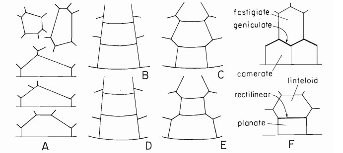

PARATABULATION
Tabulation is far and away the most significant morphological character in the systematics of living peridinialean dinoflagellates. Genera are distinguished primarily by differences in the number and arrangement of plates, and minor diferences in plate shape and arrangement are often significant at the species level. Aside from tabulation, the taxonomic criteria based on thecal morphologywhich are available to the systematist are limited to such features as thecal shape and surficial relief of the plates including the destribution of trichocyst pores. In the study of dinoflagellate cysts the conditions are rather different. Here two factors assure that paratabulation will never be so uniquely important a taxonomic character as is tabulation for dinoflagellate thecae. First, paratabulation is frequently expressed incompletely or imperfectly and, when this is so, no technique equivalent to dissection can make obscure paraplate boundaries more readily visible.
The second, aspect is essentially topologic and concerns the mutual relationship of plates in the tabulation mosaic. The third, aspect is strictly geometric, involving the sizes and shapes of plates. Although these factors are obviously related to both plate distribution and topology, the concern here is specifically the number and dimensions of the sides and angles on the individual plates.
For the tabulation of a theca or the paratabulation of a cyst to be fully characterized, the first three of these aspects must all be considered, either explicity or implicity. Only the first or distributional aspect can be indicated by a tabulation formula in Kofoidian style. Unfortunately, the connotation given to "tabulation" is commonly limited to just this distributional aspect, and failure to give adequate attention to the topologic and geometric aspects of tabulation as well is responsible for the serious deficiency of many taxonomic descriptions the topologic aspect concerns properties that are, probably less familiar or less obvious. Topology, as a field of mathematical inquiry is concerned with those properties of geometric configurations which are unaltered by elastic deformations.
Topologically entical tabulation patterns will always be represented by identical tabulation formulae. The importance of distinguishing the geometric and topologic aspects of tabulation patterns is illustrated in the next figure. Although shapes of plates and paraplates are almost endlessly varied in detail, an effort to distinguish two general shapes that have proved descriptively useful has led to several alternative terms among which the fittest have yet to be selected.
The somewhat overlapping scopes of these terms should be clear if the following definitions are considered along with the diagrams in the last figure. Planate. describes a plate that appears to contact the next more poleward series along aline essentially parallel to the cingulum. Geniculate (Ewitt, 1978) refers to the angular boundary between two latitudinal series in fossil representation.
This is one of the two most commonly encountered groups of patterns among fossil cysts, occurring in many distinctive species with diverse morphologies. Both proximate and cavate cysts are common but chorate cysts are extremely rare. Modern examples include Protoperidinium, hundred marine species until recently (Balech, 1974) attrbiuted to Peridinium, now represented by a moderate number of almost exclusively freshwater species; and a small number of other marine genera with one to a few species each. (Hanza, 2013).
Paratabulation are the indications provided by the morphology of the cyst of an innate tabulation, whether expressed by paraplates, by the arrangement of surficial ridges, grooves or ornament, by the presence of cingulum and sulcus, or merely by the shape of the archeopyle.
Holotabulate: Greek holo, whole, complete all. Consist in having a clear surface pattern of parasutures or parasutural crests whose arrangement largely or completely corresponds to the tabulation of a dinoflagellate theca. Septa or ornament may also be present within the boundaries of the resultant paraplates.
Hercotabulate: Greek herkos, fence. Consist in having a paratabulation completely or partially expressed by gonal, or by gonal and intergonal, spines or other processes, with or without distal or median linkage but not arising from crests.
Penitabulate: Latin penitus, within. Having a paratabulation completely or partially expressed by penitabular crests, processes or other ornament.
Intratabulate: Latin intra, within. Having a paratabulation completely or partially expressed by intratabular processes or other intratabular ornament.
Cingulotabulate: Latin cingulum, girdle, zone. Consist in having a paratabulation expressed only by indications of cingulum and sulcus (usually only incompletely shown) and by the shape of the archaeopyle.
Cryptotabulate: Greek krypto, hide, conceal. Consist in having a paratabulation normally indicated only by the shape and position of the archaeopyle. However, the cingulum may be sometimes indicated by faint marks or folding and, in exceptional specimens, the sulcus and parasutures, may be partially and faintly discernible. (Sarjeant, 1982).
BIBLIOGRAPHY:
- Hamza, R. A. R. (2013). Dr. Ali Soliman (Doctoral dissertation, Faculty of Science Geology Department Dinoflagellate cysts: principals Essay submitted to the Geology Department faculty of science, Tanta university).
- Sarjeant, W. A. (1982). Dinoflagellate cyst terminology: a discussion and proposals. Canadian journal of botany, 60(6), 922-945. pp. 942.